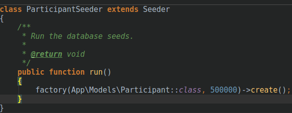

Aplicação OLTP para Controle de Submissão e Avaliação de Artigos
A aplicação OLTP para o sistema de submissão, já descrito no post anterior, que será apresentada nos parágrafos seguintes foi construída com apoio das framework Laravel, Docker e Bootstrap. A elaboração do sistema seguiu as etapas ilustradas na figura 1.
Figura 1. Etapas para elaboração da aplicação
As primeiras etapas foram as de coleta de requisitos e modelagem, já descrita no post anterior, após seguiu-se para a população da base, criação das transações de commit e rollback e finalização da aplicação.
A geração de dados para povoar o banco foi feita dividida em 3 etapas: A primeira etapa foi povoar as tabelas Congress e Paper, para isso foi utilizado uma técnica chamada Web Scrapping, na qual é criado um programa que varre a web coletando dados específicos (o código utilizado se encontra em https://github.com/Felipeandradee/scrapper-tebd ). A figura 2 e 3 ilustram um trecho do script que realiza primeira etapa do povoamento.
Figura 2. Primeira Etapa do Povoamento

Figura 3. Primeira Etapa do Povoamento.
A segunda etapa foi povoar a tabela Participant, nesse caso foi utilizado uma biblioteca php chamada Faker que gera dados fictícios aleatório com base em um padrão pré definido. Por fim, com esses dados foi possível criar as tabelas reviser, autor, congress_paper e review, já que são tabelas que fazem a junção de dados das etapas 1 e 2. As figuras 4 e 5 ilustram a segunda etapa do povoamento.
Figura 4. Definição das regras para geração dos dados para cada campo da tabela Participants.

Figura 5. Chamada ao gerador solicitando a criação de 500.000 registros fictícios.
Por fim adicionamos uma chamada ao seed criado na classe DatabaseSeed que é responsável por executar os seeds (Figura 6).
Figura 6. Chamada ao seed.
O programa foi executado via terminal com o comando: “php artisan migrate --seed”.